یک ماجراجویی کمدی، فانتزی و موزیکال در اتاق فرمان ذهن یک دختر ایرانی — جایی که شادی، غم، خشم، ترس و انزجار برای نجات او باید فرمان را پیدا کنند.
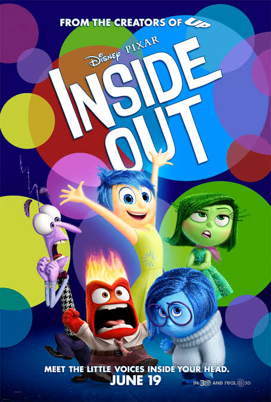
مخاطب برای همراهشدن با نمایش نیازی به دیدن انیمیشن ندارد؛ شخصیتها و قواعد جهان داستان در دل اجرا معرفی میشوند. پوستر مقابل، مرجع آشنایی سریع با دنیای اصلی و شخصیتهای شناختهشده آن است.
برای هر شخصیت، شناسنامه مستقل لباس و گریم در مقیاس A3 تدوین شده است؛ شامل نمای روبهرو، سهرخ و نیمرخ، پالت رنگ، انتخاب متریال و جزئیات اجرایی برای تیمهای لباس و گریم.
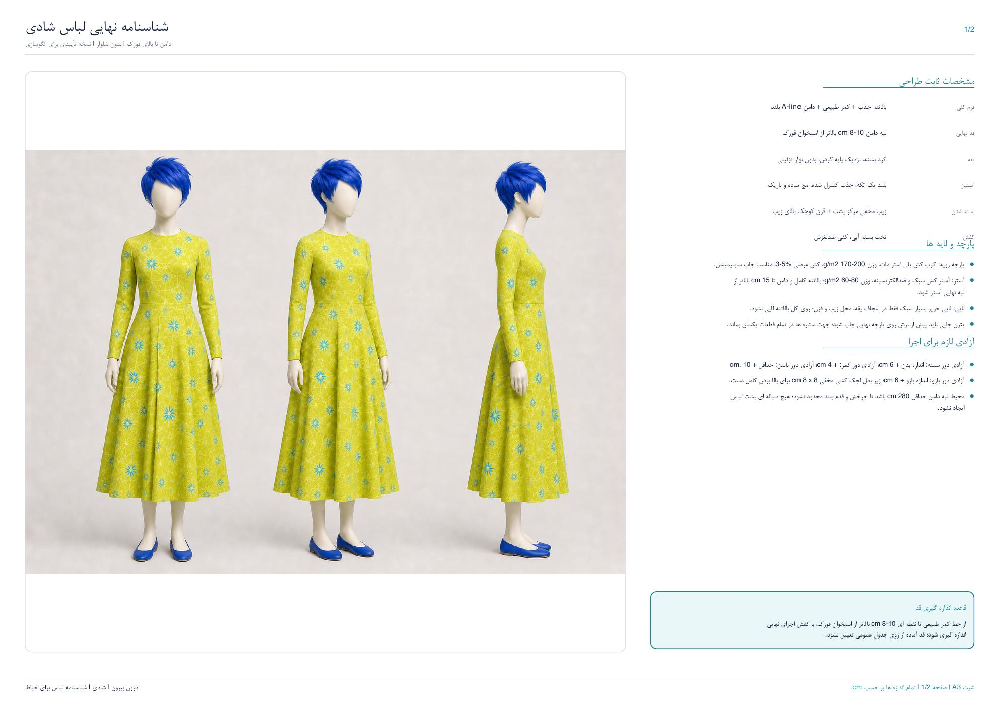
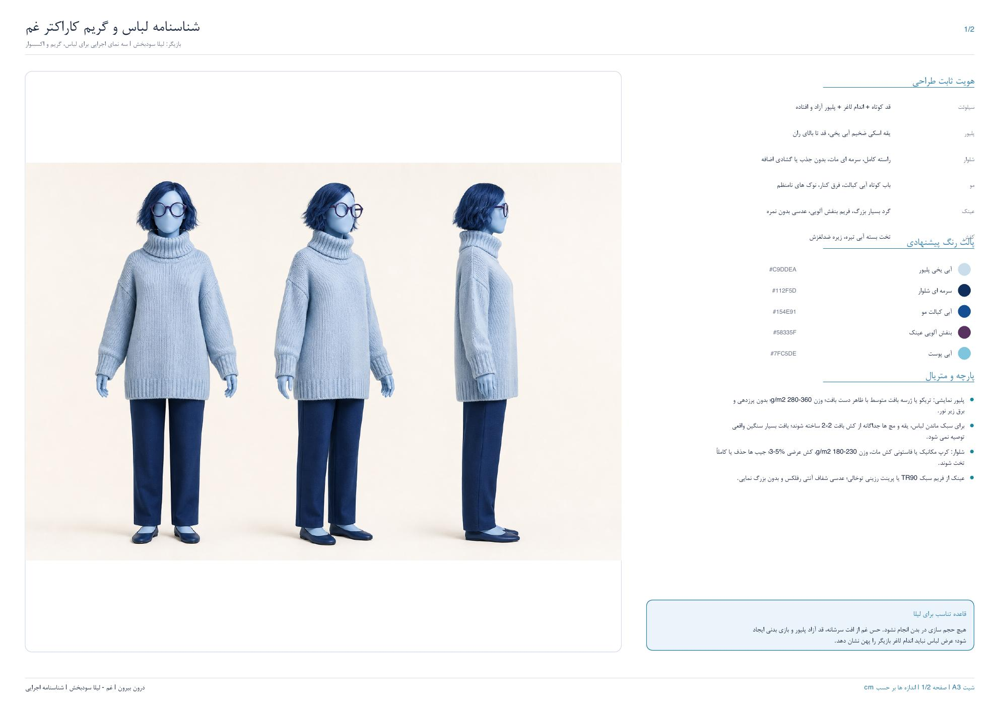
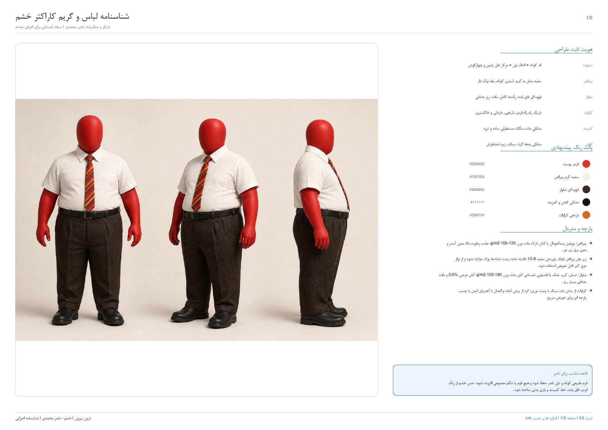
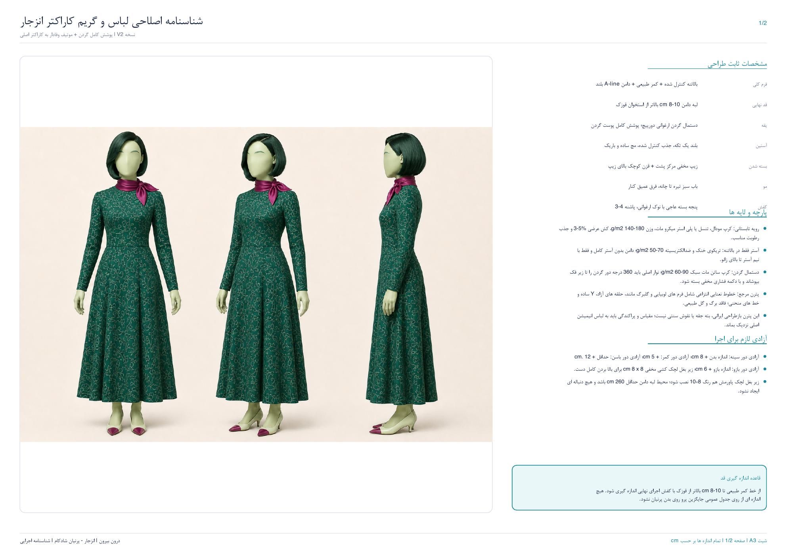
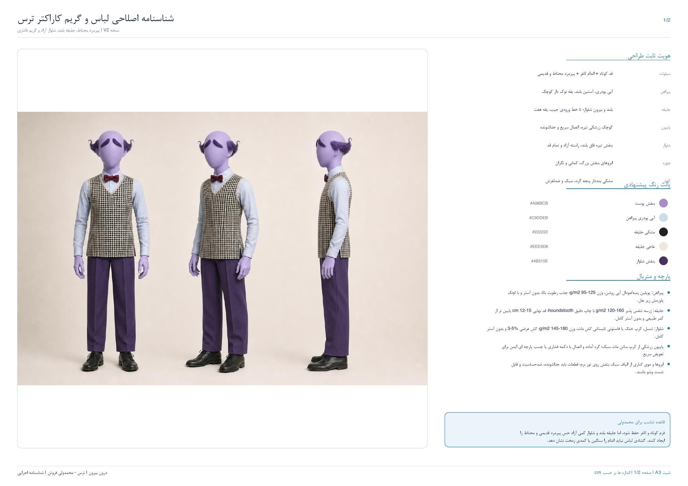
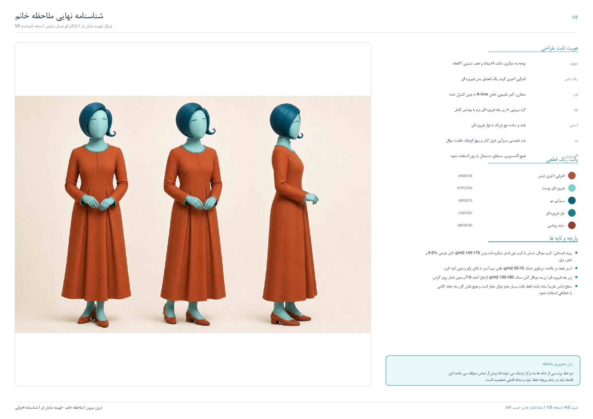
این تصاویر تنها بخشی از اسناد اجرایی پروژهاند؛ نسخه کامل هر شناسنامه شامل مشخصات دوخت، جنس پارچه، آزادی حرکتی بازیگر و دستورالعمل گریم صحنه است.
دکور نمایش برای یک اجرای تکلوکیشن طراحی شده است: میز فرمان نورگذر با نورپردازی LED قابلکنترل، بدنه سفید، فرم منحنی و ساختار ماژولار برای جابهجایی و تور.
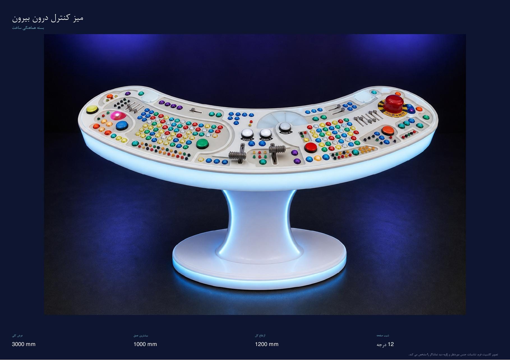
مدلسازی سهبعدی، نقشههای اندازهگذاریشده و جزئیات ساخت برای هماهنگی مستقیم با تیم دکور و اجرای دقیق در سالن.
داستان در اتاق فرمان ذهن دختری به نام «باران» میگذرد؛ جایی که شادی، غم، خشم، ترس و انزجار هرکدام بخشی از واکنشها و تصمیمهای او را هدایت میکنند. با ورود شخصیت تازهای به نام «ملاحظه خانم» و تلاش احساسات برای کنترل کامل باران، تعادل اتاق فرمان بههم میریزد و فرمان اصلی گم میشود.
نمایش بدون تبدیلشدن به یک برنامه آموزشی مستقیم، به اضطراب، ترس از اشتباه، مقایسهشدن، فشار برای همیشه شادبودن و دشواری بیان احساسات میپردازد.
از تولید اثر و میزبانی اجرای زنده تا فروش بلیت و دسترسی دیجیتال، این چهار مجموعه حلقههای اصلی شکلگیری پروژه و ارتباط آن با مخاطب را میسازند.
کمپانی تئاتر موزیکال فانتزی دیوولی، مجموعه خالق و تولیدکننده نمایشهای این مسیر و مسئول شکلگیری اجرایی پروژه است.
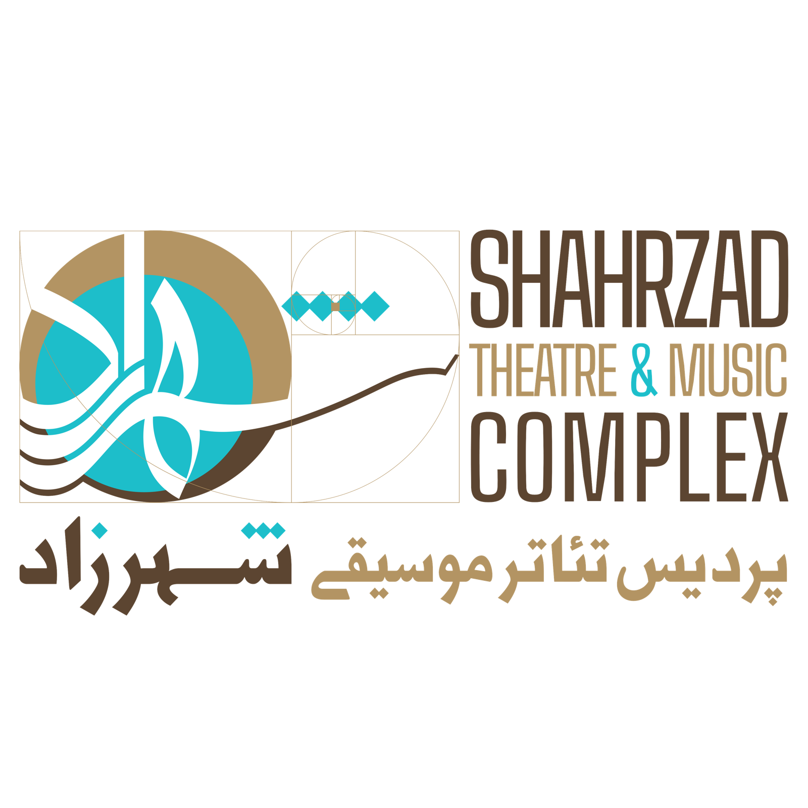
سالن شماره ۱ پردیس تئاتر شهرزاد، خانه اجرای تهران و بستر اصلی تجربه زنده این پروژه است.
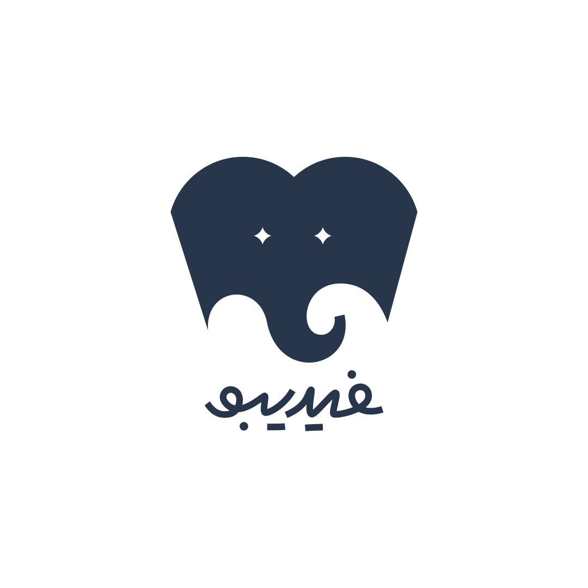
بستر فروش بلیت و ارتباط دیجیتال با مخاطبان نمایش در مسیر معرفی و دسترسی به اجرا.
ظرفیتی گسترده برای معرفی نمایش و دسترسی مستقیم به خانوادهها و مخاطبان آنلاین در سراسر ایران.
صداپیشه در این پروژه تنها صدای شخصیت نیست؛ بازیگر با گریم کامل روی صحنه حضور دارد، آواز میخواند و شخصیت را به یک تجربه زنده تبدیل میکند.
پرانرژیترین عضو اتاق فرمان؛ تصور میکند مأموریتش خوشحال نگهداشتن دائمی باران است.
نقش قطعیآرامترین شخصیت اتاق فرمان؛ در طول داستان مشخص میشود باران بدون او نمیتواند نیاز به همدلی و شنیدهشدن را بیان کند.
در حال مذاکرهمدافع مرزها و حقوق باران؛ صدایی که مخاطب پیشتر شنیده، اینبار در اجرای زنده روی صحنه.
نقش قطعیپیش از هر تصمیم، تمام اتفاقات بد ممکن را تصور میکند؛ احتیاط بیش از اندازهاش موقعیتهای کمدی میسازد.
نقش قطعیباهوش و نکتهسنج؛ مسئول تشخیص چیزهایی که ممکن است برای باران نامناسب یا آسیبزا باشند.
نقش قطعیمؤدب، آرام و ظاهراً خیرخواه؛ اما وقتی کنترل اتاق فرمان را در دست میگیرد، باران دیگر نمیتواند خواسته واقعی خود را تشخیص دهد.
نقش قطعیفرمان گمشده این تصور رایج را به چالش میکشد که بعضی احساسات خوباند و بعضی باید پنهان شوند.
شخصیت «ملاحظه خانم» از یک تجربه آشنا برای کودکان ایرانی شکل گرفته: تلاش دائمی برای راضیکردن دیگران و ترس از قضاوتشدن. حضور او، نمایش را از یک بازآفرینی ساده جدا میکند و به آن هویتی مستقل ایرانی میدهد.
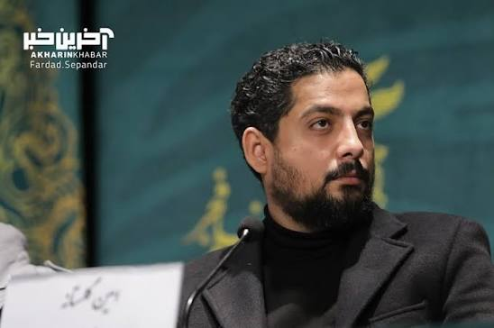
گلستانه با ترکیب جهانهای آشنای انیمیشن، قصهپردازی ایرانی، صداپیشگان محبوب، موسیقی زنده و طراحی صحنه فانتزی، تجربهای ساخته است که کودک و والدین را همزمان مخاطب قرار میدهد. «درون بیرون: فرمان گمشده» ادامه و تکامل همین مسیر هنری است.
فرمان گمشده روی سابقه دو نمایش پرمخاطب قبلی امین گلستانه ساخته میشود.
اجرای اصلی در پردیس تئاتر شهرزاد، سالن شماره ۲ برگزار میشود. طراحی تکلوکیشن و دکور ماژولار، اجرا در شهرهای مختلف را امکانپذیر میکند.
شهرهایی که پیش از آغاز اجرای تهران، اعلام آمادگی برای میزبانی کردهاند:
گویهای رنگی احساسات، تصاویر محدود از میز فرمان، شمارش معکوس تا رونمایی؛ بدون افشای کامل داستان.
هر شخصیت بهصورت مستقل معرفی میشود: شادی، خشم، انزجار، ترس، ملاحظه خانم و در پایان، رونمایی بازیگر نقش غم.
پوستر و تیزر رسمی، فعالشدن سامانه فروش بلیت، پیشفروش محدود و فروش گروهی مدارس و سازمانها.
رویدادی رسانهای با حضور هنرمندان، رسانهها و اینفلوئنسرهای خانوادگی؛ استیج عکاسی اختصاصی و نمایش هویت بصری اسپانسر.
واکنش کودکان و والدین، پشتصحنه، گزارش سانسهای پرفروش و اعلام تمدید یا سانسهای تازه.
کمپینی کوتاه و مستقل برای هر شهر، با تیزر اختصاصی، رسانههای محلی و افتتاحیه کوچک شهری.
فرصتی برای حضور هدفمند برند در تجربهای خانوادگی، فرهنگی و سرگرمکننده — نه فقط درج یک لوگو.
مبالغ این بستهها در ازای مجموعهای از خدمات تبلیغاتی، رسانهای و فرصتهای دیدهشدن برند پرداخت میشوند؛ این همکاری سرمایهگذاری، مشارکت در فروش یا تسهیلات قابلاسترداد نیست و وجهی به اسپانسر بازگردانده نمیشود. دامنه دقیق خدمات و جایگاههای تبلیغاتی هر برند در قرارداد نهایی مشخص خواهد شد.
پرداخت هر بسته در سه مرحله انجام میشود: ۷۰٪ همزمان با عقد قرارداد، ۲۰٪ حداکثر ۱۰ روز پیش از افتتاحیه، و ۱۰٪ حداکثر ۷ روز پس از افتتاحیه. جایگاه بسته طلایی تنها به یک برند تعلق میگیرد.
من ایران را در چشمهای کودکانی میبینم که هنوز میتوانند جهان را از نو تصور کنند.
تخیل برای کودک، فرار از واقعیت نیست؛ نخستین تمرین او برای تغییر واقعیت است.
آرزوی من ساختن جهانی کوچک روی صحنه است که فرزندان ایران در آن احساس امنیت کنند و باور کنند آینده هنوز میتواند زیبا باشد.